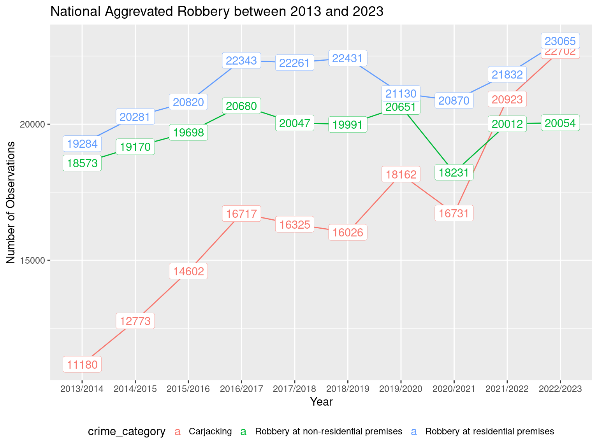
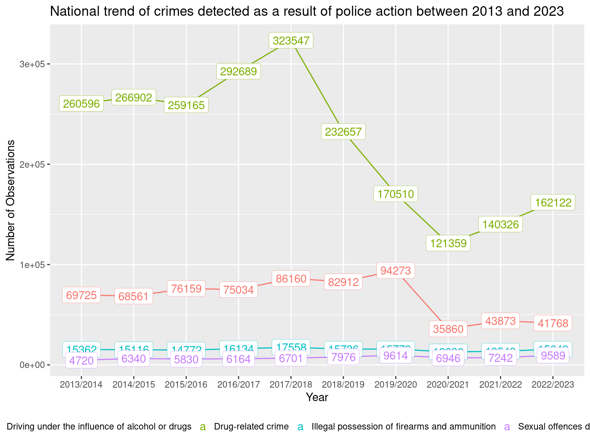
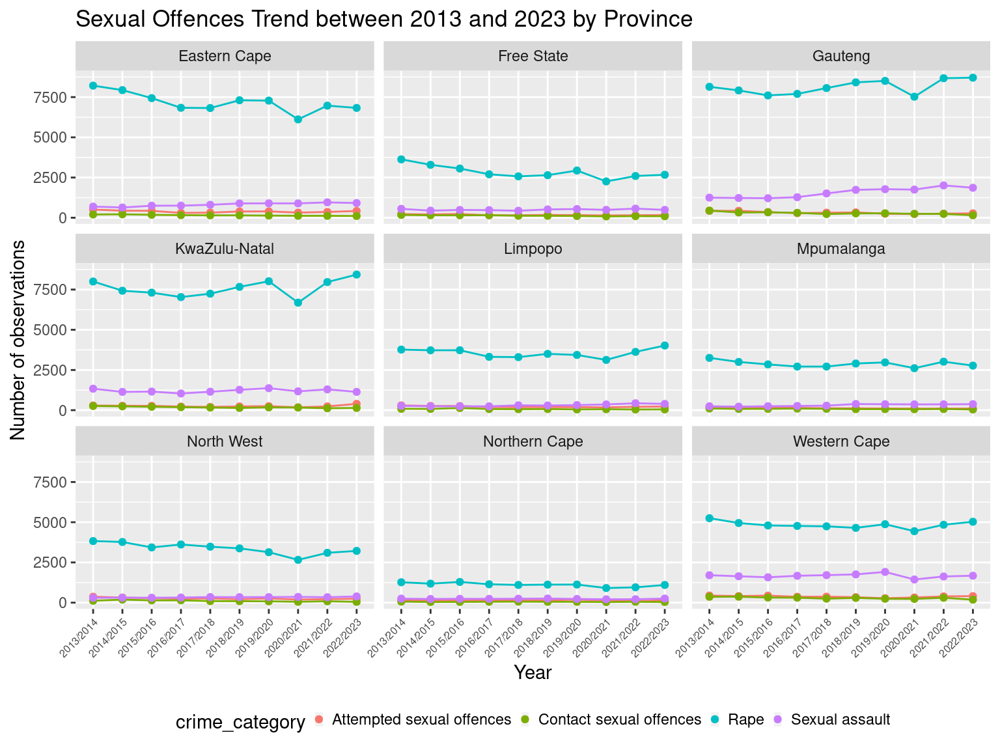

# load necessary libraries
library(ggplot2)
library(tidyverse)
library(janitor)
library(here)
library(gt)
library(gtsummary)
library(knitr)
library(DT)
library(maps)
library(sf)
library(leaflet)South African Police Service Crime Stats - 2022-2023

Crime Situation in South Africa
South Africa has one of the highest-crime rate in the world - which includes high rates for crimes such as assaults, rape, murder, and other violent crimes. The high crime rate has been attributed to factors such as inadequate education, unemployment, poverty, and unequal distribution of resources. Violent crimes such as rape and murder are on the increase compared to other crimes in the country. South Africa has one of the highest rape rates in the world. According to the South African Medical Research Council, 1 in 4 men surveyed have committed rape.
The country crime rate affects foreign investment and reduces the faith in the government and institutions tasked with public safety.
Project description
The South African Police Service (SAPS) is the national police force of the Republic of South Africa. There are 1154 police stations in the country which are classified under provincial borders, with a provincial commissioner appointed for each of the 9 provinces in South Africa. The SAPS has 117950 officers who are responsible for the maintenance of public safety of 62 million South Africans.
The SAPS in collaboration with Statistics South Africa (Stats SA), generate crime statistics quarterly and annually. The statistics are in line with international best practices and are used to inform the policy development planning in the criminal justice systems.
The analysis goals:
view the crime trends in the country
See which crimes are most common in each province
give commentary on which areas need more police reinforcement based

Methodology
Crimes reported are recorded as they are received (from either the victims, witnesses or third parties) by the police or when they are detected by the police, irrespective of when the crime(s) were committed or who committed them. Crime statistics are created from recording process where a crime codes are allocated to a reported crime type. A police station has to aggregate the codes in order for the province and the national to synchronize computation and distribution of reports.
The crime statics are focused on the 21 priority crimes grouped into two categories:
17 community-reported serious crimes
contact
contact-related
property-related
other serious crimes
crimes that are detected as a result of police action.
Import libraries
Functions
filter_df <- function(df, crime_list){
df |>
filter(crime_category%in% crime_list) |>
group_by(year, crime_category, crime_count) |>
summarise(
) |>
mutate(
year = str_remove(year,"x"),
year = str_replace(year,"_","/")
)
}filter_df_provincial <- function(df, crime_list){
df |>
filter(crime_category%in% crime_list) |>
group_by(year, station, crime_category, crime_count) |>
summarise(
) |>
mutate(
year = str_remove(year,"x"),
year = str_replace(year,"_","/")
)
}provincial_facet <- function(df,plot_title) {
ggplot(
df,
aes(
x = year,
y = crime_count,
group = crime_category,
color = crime_category
)
) +
geom_line() +
geom_point()+
labs(
title = plot_title,
x = "Year",
y = "Number of observations"
)+
theme(legend.position = "bottom",
legend.key.size = unit(0.05,"cm")) +
facet_wrap(~station)
}# read in the SAPS Crime dataset
df_crime_sa = read_csv(here::here("data/raw/2022_2023 _annual_stats_raw.csv"))
#read_csv("../data/raw/2022_2023 _annual_stats_raw.csv")# read in SA_info_dataset
za_df = read_csv(here::here("data/raw/South_Africa_provinces.csv"))Data Preprocessing
# use the clean_names function to convert variable names to snake_case convention.
df_crime_sa_clean <- df_crime_sa |>
clean_names()# select relevant columns and remove columns with no information (NA in each row)
df_crime_sa_clean <- df_crime_sa_clean |>
select(crime_category_national_contribution_placement:count_offence_group)## save the df_crime_sa_clean to processed folder
# write_csv(df_crime_sa_clean,"../data/processed/df_crime_clean.csv")glimpse(df_crime_sa_clean)Rows: 49,084
Columns: 25
$ crime_category_national_contribution_placement <chr> "Murder Station 524",…
$ crime_category_provincial_contribution_placement <chr> "Eastern Cape Murder …
$ comp_level <chr> "Station", "Station",…
$ station_crime_category <chr> "Afsondering Murder",…
$ station <chr> "Afsondering", "Afson…
$ district <chr> "Alfred Nzo District"…
$ province <chr> "Eastern Cape", "East…
$ crime_category <chr> "Murder", "Attempted …
$ code <chr> "1", "2", "4", "6", "…
$ x2013_2014 <dbl> 14, 4, 8, 1, 13, 2, 2…
$ x2014_2015 <dbl> 15, 8, 14, 2, 7, 0, 0…
$ x2015_2016 <dbl> 9, 5, 13, 0, 22, 0, 1…
$ x2016_2017 <dbl> 18, 3, 12, 0, 13, 0, …
$ x2017_2018 <dbl> 4, 2, 21, 4, 20, 1, 0…
$ x2018_2019 <dbl> 7, 1, 14, 2, 8, 2, 1,…
$ x2019_2020 <dbl> 6, 5, 9, 1, 13, 0, 1,…
$ x2020_2021 <dbl> 12, 5, 9, 1, 17, 3, 0…
$ x2021_2022 <dbl> 20, 5, 6, 0, 15, 1, 3…
$ x2022_2023 <dbl> 11, 6, 8, 0, 17, 2, 0…
$ national_contribution_placement <dbl> 524, 687, 872, 1075, …
$ national_count_diff_placement <dbl> 1106, 527, 565, 731, …
$ provincial_contribution_placement <dbl> 98, 90, 131, 170, 110…
$ provincial_count_diff_placement <dbl> 191, 78, 83, 112, 65,…
$ count_direction <chr> "Decreased", "Increas…
$ count_offence_group <chr> "17 Community reporte…Crime Situation in the Republic of South Africa
The SAPS releases an annual crime report based on crime statistics, in which they focus on 21 priority crimes which are grouped into two main categories:
17 community-reported serious crimes
crimes detected as a result of police action
National Crime Trend
In this section, we will look at the crime trends on a national level across selected crime categories over a 10 year period. The dataset will be filtered for observations were the comp_level is national.
# filter the crime dataset for observations where the comp_level is equal to National
df_crime_sa_national <- df_crime_sa_clean |>
filter(comp_level=="National") |>
select(crime_category:count_offence_group) |>
select(!provincial_contribution_placement) |>
pivot_longer(
cols = x2013_2014:x2022_2023,
names_to = "year",
values_to = "crime_count"
)Contact Crimes (Crimes Against The Person)
Contact crimes involves crimes where victims are targets of violence or cases where victims are near property that are target by criminals and are subjected to violence or the threats of violence.
The crimes included in this grouping are: Murder, Sexual offences, Attempted murder, Assault with the intention to inflict grievous bodily harm, Common assault, Common robbery, and Robbery with aggravating circumstances.
Two of the crime groupings can be further subdivided into other crimes:
Sexual Offences
Rape
Sexual Assault
Attempted sexual offences
Contact sexual assault
Robbery with aggravating circumstances
Carjacking Robbery at Non-residential premises
Robbery at residential premises
Robbery of cash in transit
Truck Hijacking
# create contact_crimes list
contact_crimes_list <- c("Murder", "Sexual offences", "Attempted murder", "Assault with the intent to inflict grievous bodily harm", "Common assault", "Common robbery", "Robbery with aggravating circumstances")
# create contact crimes dataframe
contact_crimes_national <- filter_df(df_crime_sa_national, contact_crimes_list)ggplot(data = contact_crimes_national,
aes(
x = year,
y = crime_count,
group = crime_category,
color = crime_category
))+
geom_line()+
labs (
title = "National Contact Crime between 2013 and 2023",
x = "Year",
y = "Number of Observations"
) +
geom_label(aes(
label = crime_count,
colour = crime_category
),
label.size = 0.1) +
# geom_text(check_overlap = TRUE) +
theme(legend.position = "bottom",
legend.key.size = unit(0.15,"cm"))
contact_crimes_national_wide <- contact_crimes_national |>
pivot_wider(
names_from = year,
values_from = crime_count
)
contact_crimes_national_wide |>
gt()| 2013/2014 | 2014/2015 | 2015/2016 | 2016/2017 | 2017/2018 | 2018/2019 | 2019/2020 | 2020/2021 | 2021/2022 | 2022/2023 |
|---|---|---|---|---|---|---|---|---|---|
| Assault with the intent to inflict grievous bodily harm | |||||||||
| 182333 | 182556 | 182933 | 170616 | 167352 | 170979 | 166720 | 143393 | 162842 | 169374 |
| Attempted murder | |||||||||
| 16989 | 17537 | 18127 | 18205 | 18233 | 18980 | 18635 | 18707 | 22095 | 25131 |
| Common assault | |||||||||
| 166081 | 161486 | 164958 | 156450 | 156243 | 162012 | 165494 | 149442 | 169963 | 185374 |
| Common robbery | |||||||||
| 53505 | 54927 | 54110 | 53418 | 50730 | 51765 | 51825 | 37648 | 41600 | 47057 |
| Murder | |||||||||
| 17023 | 17805 | 18673 | 19016 | 20336 | 21022 | 21325 | 19972 | 25181 | 27494 |
| Robbery with aggravating circumstances | |||||||||
| 118963 | 129045 | 132527 | 140956 | 138364 | 140032 | 143990 | 119841 | 132788 | 146125 |
| Sexual offences | |||||||||
| 56680 | 53617 | 51895 | 49660 | 50108 | 52420 | 53293 | 46214 | 52694 | 53498 |
According to the stats and as presented in Figure 1, common assault, assault with the intent to inflict grievous bodily harm, and robbery with aggravating circumstances have been the most frequent contact crimes in South Africa in the past 10 years.
Sexual Offences
We shall look at the occurrence of sexual offences in the country over the past 10 years.
# create a list of offences that compose of sexual offences
sexual_offences_list <- c("Rape","Sexual assault","Attempted sexual offences","Contact sexual offences")
# filter out these offences from the national crime data frame
sexual_offences_national <- filter_df(df_crime_sa_national, sexual_offences_list)ggplot(data = sexual_offences_national,
aes(
x = year,
y = crime_count,
group = crime_category,
color = crime_category
))+
geom_line()+
labs (
title = "National Sexual Offences between 2013 and 2023",
x = "Year",
y = "Number of Observations"
) +
geom_label(aes(
label = crime_count,
colour = crime_category
),
label.size = 0.1) +
theme(legend.position = "bottom",
legend.key.size = unit(0.15,"cm"))
In ?@fig-sexual_offences_national, rape has consistently been the most frequent sexual offence in the past 10 years. The number of rape incidents has been 5 times greater than the other offences combined during this 10 year period. South Africa is among the countries with the highest rape cases in the world - higher than countries at war. There were 42780 cases reported in 2022/2023, which equates to 177 incidents per day. Rape is a systemic and endemic problem in South Africa.
We have seen the national trend of sexual offences in the country, we will then dig deeper to see the distribution of the incidents across country’s provinces.
Aggravated Robbery
# create a list of some of the subcategories of aggravated robbery
robbery_agg_list <- c("Carjacking","Robbery at residential premises","Robbery at non-residential premises" )
# use the list to filter national crime dataframe
robbery_agg_national <- filter_df(df_crime_sa_national, robbery_agg_list)
ggplot(data = robbery_agg_national,
aes(
x = year,
y = crime_count,
group = crime_category,
color = crime_category
))+
geom_line()+
labs (
title = "National Aggrevated Robbery between 2013 and 2023",
x = "Year",
y = "Number of Observations"
) +
geom_label(aes(
label = crime_count,
colour = crime_category
),
label.size = 0.1) +
theme(legend.position = "bottom",
legend.key.size = unit(0.15,"cm"))
The crimes in the aggravated robbery category have all increased during this 10 year period. Robbery at residential premises has topped the list out of these three crimes. However, carjacking has steadily increased in this time period and is expected to surpass robbery at residential premises.
Contact-related Crimes
Contact-related crimes consist of Arson and Malicious damage to property. These crimes have a close relationship and also involve damage to or destruction of another person’s property ( usually as a means of punishment) or for the purpose of fraudulent insurance claims.
# create a contact related list crimes
contact_related_list <- c("Arson", "Malicious damage to property")
contact_related_national <- filter_df(df_crime_sa_national, contact_related_list)
ggplot(data = contact_related_national,
aes(
x = year,
y = crime_count,
group = crime_category,
color = crime_category
))+
geom_line()+
labs (
title = "National Contact-related crimes between 2013 and 2023",
x = "Year",
y = "Number of Observations"
) +
geom_label(aes(
label = crime_count,
colour = crime_category
),
label.size = 0.1) +
theme(legend.position = "bottom",
legend.key.size = unit(0.15,"cm"))
Other Serious Crimes
These are serious crimes which have not been included in the categories above.
All Theft not mentioned elsewhere
Commercial crime
Shoplifting
# create a list of the other serious crimes
serious_crimes_list <- c("All theft not mentioned elsewhere", "Commercial crime", "Shoplifting")
# create a dataframe for other serious crimes
serious_crimes_national <- filter_df(df_crime_sa_national, serious_crimes_list)
# plot the national trend of national serious crimes
ggplot(data = serious_crimes_national,
aes(
x = year,
y = crime_count,
group = crime_category,
color = crime_category
))+
geom_line()+
labs (
title = "National Other Serious crimes between 2013 and 2023",
x = "Year",
y = "Number of Observations"
) +
geom_label(aes(
label = crime_count,
colour = crime_category
),
label.size = 0.1) +
theme(legend.position = "bottom",
legend.key.size = unit(0.15,"cm"))
Crimes Detected as a Result of Police Action
These are crimes mostly which are not reported to police, and are mostly dependent on the deployment of law enforcement and intelligence personnel. These crimes are recorded after the arrest of suspects connected to the following crimes.
Illegal possession of firearms and ammunition
Drug-related crimes
Driving under the influence of alcohol and/or drugs
Sexual offences detected as a result of police action
# create a list of the crimes detected as a result of police action
police_detected_list <- c("Illegal possession of firearms and ammunition", "Drug-related crime", "Driving under the influence of alcohol or drugs", "Sexual offences detected as a result of police action")
# create a dataframe for crimes detected as a result of police action
police_detected_crimes_national <- filter_df(df_crime_sa_national, police_detected_list)
# plot the national trend of crimes detected as a result of police action
ggplot(data = police_detected_crimes_national,
aes(
x = year,
y = crime_count,
group = crime_category,
color = crime_category
))+
geom_line()+
labs (
title = "National trend of crimes detected as a result of police action between 2013 and 2023",
x = "Year",
y = "Number of Observations"
) +
geom_label(aes(
label = crime_count,
colour = crime_category
),
label.size = 0.1) +
theme(legend.position = "bottom",
legend.key.size = unit(0.15,"cm"))
Provincial Composition of Crimes in the Country
In the previous section, we looked at the national trend of crimes across the two main SAPS crime categories. South Africa nine provinces are the Eastern Cape, the Free State, Gauteng, KwaZulu-Natal, Limpopo, Mpumalanga, the Northern Cape, North West, and the Western Cape.

There is a vast size difference between the provinces, from the small and populated economic hub of Gauteng to the large and empty North West.

# view(za_df)
# transform data to sf object
za_sf = st_as_sf(za_df, coords = c("long", "lat"))
ggplot(za_sf) +
geom_sf(aes(
col=density,
size=population
))
ggplot(
za_df,
aes(
x=population,
y=area,
size = density,
color=province
)
) +
geom_point(alpha=0.7)+
scale_size(range = c(.1,24), name = "Population density")Gauteng is the most densely populated province with the smallest land size and largest population of all the provinces. It is considered the economic hub of the country with a high rate of migration for better economic opportunites. The two major cities are Pretoria, the executive capital of the country, and Johannesburg, the financial hub. In 2016, Gauteng contributed 33.8% of South Africa’s gross domestic product and around 5% of the GDP of Africa [reference]. KwaZulu-Natal follows is the second most densely poulated province, it has the biggest port in Durban, and contributed to 16% of the GDP in 2016. Western Cape, is the third major province in terms of density and economic contribution to South Africa. These three provinces are reported to contribute around two-thirds to the total economy of South Africa.
This section looks at how each of the 9 provinces contribute to the national numbers.
# filter the crime dataset for observations where the comp_level is equal to provincial
df_crime_sa_provincial <- df_crime_sa_clean |>
filter(comp_level=="Province") |>
# select(crime_category:count_offence_group) |>
# select(!provincial_contribution_placement) |>
pivot_longer(
cols = x2013_2014:x2022_2023,
names_to = "year",
values_to = "crime_count"
)
# group the date sae by # create contact crimes dataframe
contact_crimes_provincial <- filter_df_provincial(df_crime_sa_provincial, contact_crimes_list)
# group by year, province
contact_province_summary <- contact_crimes_provincial |>
group_by(year, station) |>
summarise(
contact_crime = sum(crime_count)
)
# create a stacked plot
ggplot(
contact_province_summary,
aes(
fill=station,
y=contact_crime,
x=year
)
) +
geom_bar(position="stack", stat="identity")
Provincial Contact Crimes
## create a facet plot
ggplot(
contact_crimes_provincial,
aes(
x = year,
y = crime_count,
group = crime_category,
color = crime_category
)) +
geom_line() +
geom_point()+
labs (
title = "Provincial Contact Crimes between 2013 and 2023",
x = "Year",
y = "Number of observations"
) +
# geom_label(
# aes (
# label = crime_count,
# colour = crime_category
# ),
# label.size = 0.01) +
theme(legend.position = "bottom",
legend.key.size = unit(0.05,"cm")) +
facet_wrap(~station)Sexual Offences
# create sexual offences dataframe
sexual_offences_provincial <- filter_df_provincial(df_crime_sa_provincial, sexual_offences_list)
# create sexual offences facet plot
ggplot(
sexual_offences_provincial,
aes(
x = year,
y = crime_count,
group = crime_category,
color = crime_category
)
)+
geom_line() +
geom_point()+
labs(
title="Sexual Offences Trend between 2013 and 2023 by Province",
x = "Year",
y = "Number of observations"
)+
theme(legend.position = "bottom",
legend.key.size = unit(0.05,"cm"))+
facet_wrap(~station)
Aggrevated Robbery
# create aggrevated robbery dataframe
robbery_agg_provincial <- filter_df_provincial(df_crime_sa_provincial,robbery_agg_list )
# create aggrevated robbery facet plot
provincial_facet(robbery_agg_provincial,
"Aggrevated Robbery Trend between 2013 and 2023 by Province")Contact Related Crimes
# create provincial contact related crimes dataframe
contact_related_provincial <- filter_df_provincial(df_crime_sa_provincial, contact_related_list)
# create contact related crimes facet plot
provincial_facet(contact_related_provincial, "Contact Related Crime Trend Between 2013 and 2023 by Province")
Other Serious Crimes
# create provincial dataframe for other serious crimes
serious_crimes_provincial <- filter_df_provincial(df_crime_sa_provincial, serious_crimes_list)
# create other serious crimes facet wrap
provincial_facet(serious_crimes_provincial, "Other Serious Crimes Provincial Trend between 2013 and 2023")
Crimes Detected as a Result of Police action
# create a provincial dataframe for the crimes detected as a result of police action
police_detected_provincial <- filter_df_provincial(df_crime_sa_provincial, police_detected_list)
# create a facet plot for the provincial
provincial_facet(police_detected_provincial, "Provincial Trend of Crimes Detected As A Result of Police Action Between 2013 and 2023")southafrica_map_data <- map_data("world") |>
filter(region=="South Africa")
ggplot(
southafrica_map_data,
aes(
x = long,
y = lat,
group=group
)
)+
geom_polygon()
za <- world.cities
za <- za[which(za$country.etc == "South Africa"),]
view(za)
head(za) name country.etc pop lat long capital
388 Adelaide South Africa 12222 -32.70 26.29 0
870 Alberton South Africa 209001 -26.33 28.13 0
1016 Alice South Africa 9796 -32.79 26.83 0
1036 Aliwal North South Africa 46991 -30.69 26.71 0
1048 Allanridge South Africa 32798 -27.74 26.67 0
2318 Atlantis South Africa 62360 -33.57 18.48 0